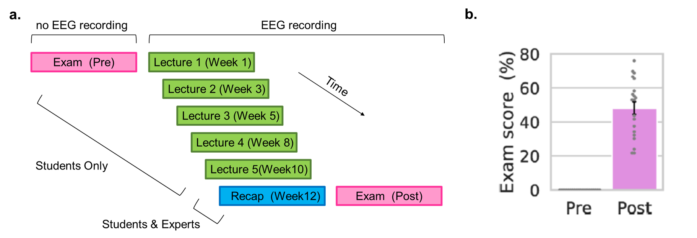
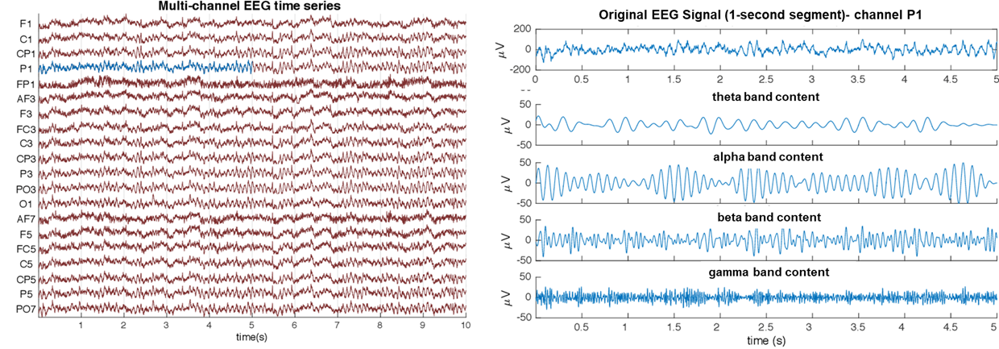
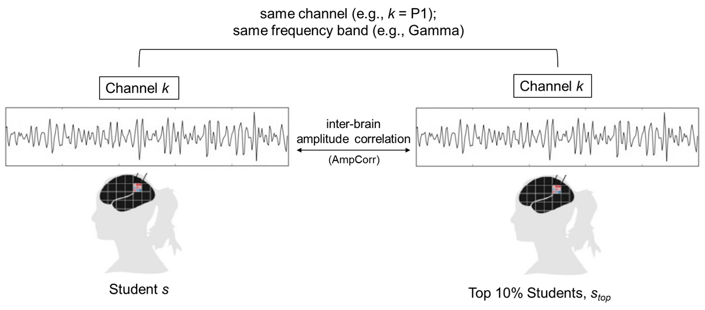
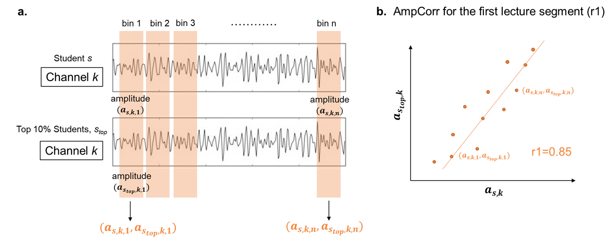
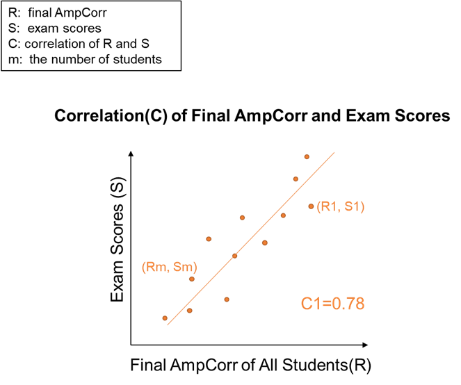
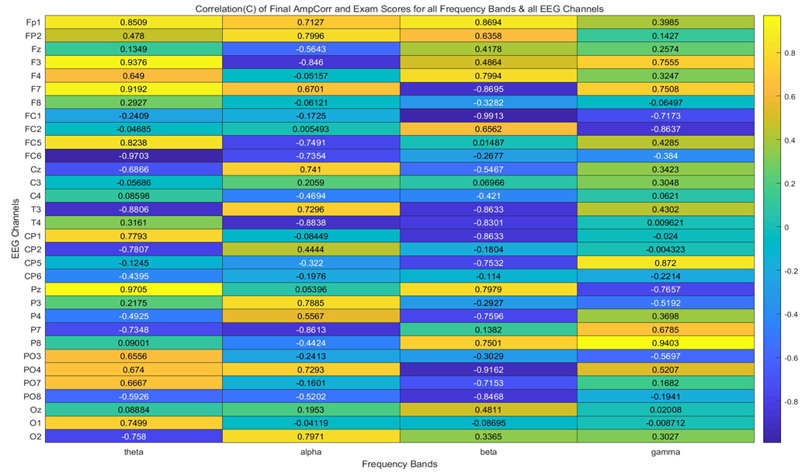
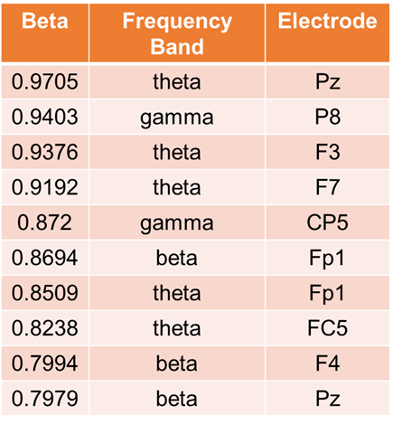
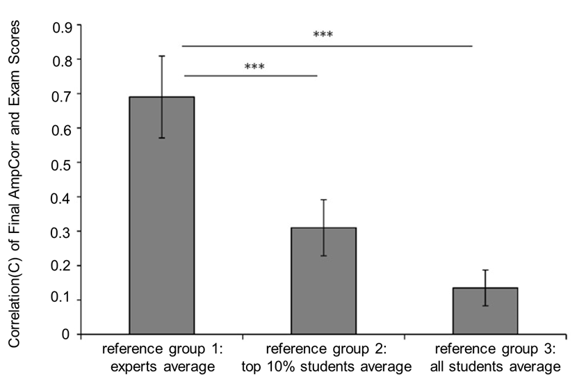

A neural approach to effectively predicting and assessing learning outcomes was recently developed by Meshulam and his team (2021) in a teaching environment that simulated a real-life computer science class. They found that greater neural alignment to class average or to experts predicted better final exam scores, in other words, better learning outcomes. While Meshulam's studies was very promising and enlightening for individualized educational assessment, it was worth noting that the reference group (i.e, 'class average' and 'experts average') may be just suitable for computer science class and may not be applied to more general or diverse educational settings due to different neural patterns evoked by distinct cognitive and emotional features caused by different disciplines.
The present research aims to find better references of learning different disciplines, say, whether it is the alignment to expert or alignment to top students (in a class), or alignment to class average that better predicts learning outcomes for an individual, in a given curriculum (here we use music theory class as an example) . Also, we plan to use EEG, which is a simpler and more inexpensive method for neural activities recording, compared to fMRI that was originally applied in Meshulam's research.
Fifty participants who has never been exposed to music theory will be recruited, in which participants who scores at the top 10% are regarded as top 10% students. Twenty participants who are experts in music theory will also be recruited. All participants are right-handed, had normal or corrected-to-normal vision and hearing, and report no learning disabilities. Student participants report having no prior knowledge in music theory. Prior to EEG recording, all students will complete the course placement exam in written form and are expected to receive 0 out of 3 points on all questions. All experts are expected to have an undergraduate or graduate degree in music or music theory and report having significant music production experience as well as knowledge of introduction to music theory course material. Participants will receive monetary compensation for their time (Meshulam,2021). The present research aims to find better references of learning different disciplines, say, whether it is the alignment to expert or alignment to top students (in a class), or alignment to class average that better predicts learning outcomes for an individual, in a given curriculum (here we use music theory class as an example) . Also, we plan to use EEG, which is a simpler and more inexpensive method for neural activities recording, compared to fMRI that was originally applied in Meshulam's research.
The course introduces basic concepts in music theory using a flipped classroom model, with lecture videos watched outside of class. EEG signals of each participant will be recorded using wireless EEG amplifiers five times during a 13-week semester while the participants are watching a subset of that week’s video lectures. EEG signals will be recorded from 32 electrodes arranged according to the international 10–20 system (Liu, 2021).
Participants will be asked not to view these lecture videos online before EEG recording. The subset of lectures shown in each EEG recording will be approximately 30 minutes long and comprised 3–5 segments. On the final week of the semester, students were shown a 15-min lecture recap video with the highlights from previous weeks during EEG recording, followed by a final exam (Figure 1a) (Meshulam,2021).
To establish a baseline, the same exam was also given to students at the beginning of the semester, in written form (“pre”exam). Experts will undergo the final EEG recording only, watching the recap videos, and completing the final exam. In the final exam, participants will be asked to give verbal responses to visually presented questions. Questions will be scored individually by course staff, providing a fine-grained measure of understanding. All students are estimated to receive a score of zero on the baseline exam. This confirms that students have no prior knowledge of course material. By the end of the course, all students will demonstrate knowledge gains (Figure 1b) (Meshulam, 2021).

Figure 1. a. Study Design. Students enrolled in an introduction to music theory course will undergo six times of EEG recording throughout the course. During the first five EEG recordings, students will be shown course lecture videos. On the final EEG recording (bottom), students will be shown lecture recaps and given a final exam. b. Exam scores. Pretest (left, expected to be zero score) will be performed prior to EEG recording, posttest (right) will be performed during the sixth time of EEG recording. Individual students (n = 50) are shown in gray. Error bar, ±1 s.e.m.
The aim of this data analysis is to figure out how inter-brain coupling using different reference groups predicts exam scores in a given discipline and then find out the best reference group that predicts learning outcomes. Here we use top 10% students, for example, as a reference group.
The raw EEG data will be preprocessed and then pass filtered into four frequency bands, namely theta (4-7 Hz), alpha (8-13 Hz), beta (14-29 Hz) and gamma (30-47 Hz) (Figure 2). The Hilbert transform will be applied to the EEG data of all 32 channels, all four frequency bands, from all participants.

Figure 2. EEG Signal filtered into its corresponding four standard sub-bands (theta, alpha, beta, gamma).
Before calculating the correlation between inter-brain coupling and exam scores, we need to know how to measure inter-brain coupling. One candidate indicator is inter-brain amplitude correlation, which is also termed as AmpCorr. AmpCorr values, varying between -1 and 1, indicate synchronous amplitude fluctuations, also known as inter-brain amplitude feature (termed as i-Amplitude) between two channels of interest (Liu, 2021). In this case, both channels of interest are from the same EEG channel (channel k, e.g., k=P1) and the same frequency band (e.g., Gamma) but from different participants. One channel is channel k from one of 50 students (e.g., student s), while the other channel is the averaged EEG signals of channel k from all top 10% students(stop) (Figure 3). AmpCorr can detect synchrony between channels independent of phase coherence, providing a promising metric for assessing inter-brain correspondence of amplitude dynamics between an individual student and members from a reference group (Zamm et al., 2018).

Figure 3. General Principles of inter-brain amplitude correlation (AmpCorr).
But how to calculate AmpCorr, for a specific student (e.g., Student s)? We will initially figure out the AmpCorr of each lecture segment (ri). We will then get a Final AmpCorr for student s (Rs) through dividing the sum of AmpCorr of all lecture segments by the number of lecture (i.e., 5) (Formula 1). The Final AmpCorr (R) represents the AmpCorr for a specific student.
Formula 1:
How to calculate the AmpCorr of each lecture segment (e.g., AmpCorr for the first lecture segment, r1) for student s (Figure 4b)? First, 1-s non-overlapping time bins will be used to extract EEG signals of two channels of interest simultaneously. Suppose one lecture segment lasts n seconds and we will then get n time bin. The amplitude of the EEG signal under the same time bin (e.g., bin 1) from two channels (e.g., both are channel k) will be calculated as a_(s,k,1) and a_(s_top,k,1), respectively, forming a datapoint (a_(s,k,1),a_(s_top,k,1)) (Figure 4a). N datapoints will be formed accordingly for a regression analysis. A Pearson’s correlation coefficient(r1) will be obtained to represent AmpCorr for the first lecture segment (Figure 4b). AmpCorr for another four lecture segments will be gained in the same way and a Final AmpCorr for student s (Rs) will be figured out. Subsequently, Final AmpCorr of all students will be calculated for analyzing the relationship between inter-brain coupling and exam scores.

Figure 4. Calculation of a AmpCorr of a specific lecture segment (e.g., the first lecture segment) of a specific student (e.g., Student s). k indicates the channel index, and n indicates the number of time bin.
A between-participants design will be used to correlate inter-brain coupling (represented by Final AmpCorr (R)) and overall exam scores (mean across questions) (S) (Figure 5), getting a correlation coefficient C1 (Meshulam,2021).

Figure 5. Correlation of Final AmpCorr and Exam Scores. All these analyses above that calculate a Correlation(C) will be repeated for each of 4 frequency bands and each of all 32 channels, generating a heatmap that visualizes totally 128 Correlation(C) (Figure 6), Top 10 significant features for exam scores prediction will also be figured out (Figure 7) (Ding, 2018).

Figure 6. Correlation(C) of Final AmpCorr and Exam Scores for all Frequency Bands & all EEG Channels.

Figure 7. The Top 10 Significant Features for Exam Scores Prediction.
Besides getting 128 correlation values using top 10% students (Stop) as a reference group, the previous analysis will be repeated when using all experts (Sexperts) and all other students (Saverage) as two other reference groups. 128 correlation values for each group will then be generated.
To see which reference group is the best one that predicts exam scores in a given curriculum, t-test will be conducted to see which reference group has significantly higher correlation values among all three reference groups. The expected result is shown in Figure 8. We can conclude that reference group 1: experts average has significantly higher correlation values than reference group 2 (p < 0.001) and reference group 3(p < 0.001). Thus, we will decide to choose experts average as the best reference group to predict students' learning outcomes.

Figure 8. Correlation(C) values (n=128) among three reference groups.